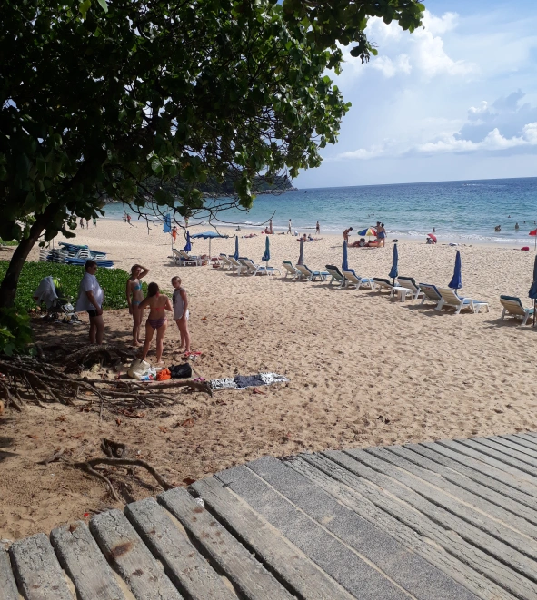
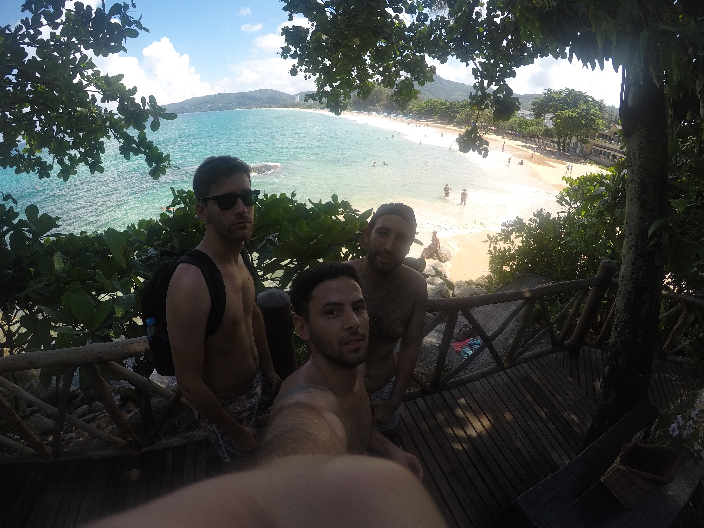
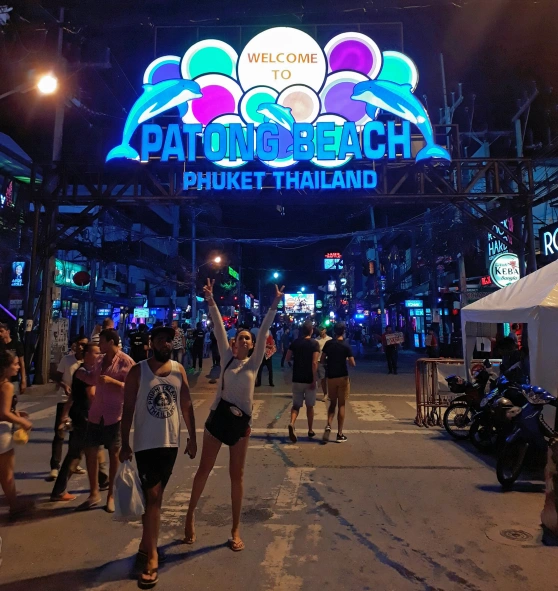
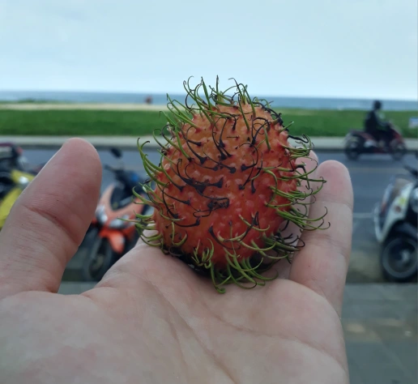

La odisea para llegar a Phuket
Karon Beach, Phuket, Tailandia.
Era un 24 de Abril por la mañana, y junto con Kevin y Tomi nos encontrábamos esperando un UBER en una de las callecitas de Bangkok, capital de Tailandia. El destino, Phuket. Lamentablemente, el UBER nunca llegó, y si bien estábamos con 3hs de anticipación y a mas o menos 45 minutos del aeropuerto Don Mueang, decidimos tomarnos un taxi. Al subir, le indicamos al chofer que iríamos al Aeropuerto Don Mueang y hasta le mostramos en un mapa impreso la dirección. Comenzó el recorrido y nos dimos cuenta que el viaje iba a ser un verdadero infierno, no se pueden imaginar como se colapsan las calles de Bangkok en las mañanas laborables. Literalmente nos movíamos a paso de hombre por la ciudad. La desesperación fue extrema cuando vimos un cartel que indicaba que nos encontrábamos cerca del Aeropuerto de Suvarnabhumi. Mi reacción, casi automática, fue hablarle exacerbado al taxista. Después de un momento y por su cara de no entender nada, me di cuenta que le estaba hablando a un tailandes, que ni siquiera sabía casi nada de ingles, en Español. Todo un disparate. Con poca paciencia y haciendo gestos de enojo, le hice entender que estaba en la dirección equívoca. Tuvo que retomar.
¿Vieron? Cuando les dije que fue un infierno no exagere, estuvimos más de 3hs arriba de ese taxi, andando a paso de hombre y con un chofer que nos paseo por todo Bangkok. Una vez que llegamos al aeropuerto nuestro vuelo ya había despegado. Sinceramente, vivimos un momento muy grande de desesperación que no se lo deseo a nadie. Finalmente, nos acercamos a las ventanillas de Air Asia, donde tuvimos que abonar un dinero extra de 8000 bahts los 3 para poder abordar el siguiente vuelo, algo así como 4000 pesos argentinos, cuando el monto inicial que habíamos pagado para volar los 3 era de aproximadamente 2000 bahts (1000 pesos argentinos). UNA LOCURA, un montón de dinero que no teníamos en cuenta, pero que por cuestiones externas teníamos que gastar. Me hubiera encantado que alguien me diga antes: "GONZALO, el tráfico en la ciudad de Bangkok es un verdadero desastre" ¡Acá se los estoy diciendo, para que no les pase lo mismo! En lo que no los puedo ayudar, es en tener suerte de encontrar un taxista decente.
.Phuket, Tailandia
Luego de todos los inconvenientes y los disgustos que tuvimos, nos encontrábamos arriba del avión, que tardó 1:15hs en llegar al Aeropuerto de Phuket. Una vez ahí, les recomiendo que busquen las VANS (seguramente los conductores de ellas los busquen a ustedes primero) donde solamente tienen que indicar el destino y listo. Nosotros tuvimos la suerte, ya que eramos los últimos que nos sumamos a la camioneta, de salir casi al instante en que subimos. El monto desde el Aeropuerto a Karon Beach es de 200 bahts por persona. Eso si, pónganse cómodos, estos dos puntos no están cerca entre si y además este transporte tiene paradas en distintos lugares de la ciudad. Ah, también se detiene en una agencia de turismo donde te quieren vender absolutamente todas las excursiones habidas y por haber. En total el viaje dura aproximadamente 1:30hs ¡Qué locura! Más que el avión entre Bangkok y Phuket, pero el principal beneficio es su bajo costo. Si se quieren desplazar dentro de la ciudad o entre playas, es muy recomendable utilizar los TUK-TUK, una camioneta pequeña y económica que podes parar en cualquier calle y solo subirte. Los TUK-TUK de Phuket son mucho más amplios que los de Bangkok.

TUK-TUK de Phuket, Tailandia.
Nuestro hospedaje fue el Doolay Hostel, un gran acierto, ya que por 300 bahts por persona (150 pesos argentinos aproximadamente) pasamos la noche en un sitio donde van muchos jóvenes, pero así todo, reina un ambiente tranquilo donde se respeta mucho al otro. Las instalaciones son muy buenas, camas cómodas, varias duchas y un balcón con vista al mar para tomarse unas cervecitas al anochecer. Hay que hacer una mención especial para los empleados que tienen una predisposición increíble para ayudarte y sobretodo una mano increíble para la cocina. El Pad Thai, las hamburguesas o el omelette thai del Doolay Hostel fueron de los platos más rico que probé en Tailandia. Ah, y también sus tragos exóticos.
La playa
Cuando llegamos a Phuket, estábamos un tanto preocupados porque el pronóstico del clima no era del todo alentador. Sin embargo, como en el resto de las vacaciones, tuvimos mucha suerte. En Phuket es común, dependiendo la fecha, que llueva todos los días un poco y luego salga el sol. Y así fue, apenas llegamos hacia mucho calor y pudimos disfrutar de la playa. Al otro día, disfrutamos toda la mañana, hasta que una tormenta nos agarro hacia al mediodía. Por fortuna, solo duro 2hs y a la tarde ya había sol nuevamente.
La zona de Karon, se destaca por tener algunas de las playas más bonitas de Phuket, es más, figura novena en el TOP 25 de las mejores playas de Asia según Tripadvisor. En mi opinión, un poco exagerado ese posicionamiento.
Las playas tienen características que las diferencian de otros lugares, como por ejemplo, de las Phi Phi Islands. En Karon las playas son grandes, con arena dorada mezclada con tonos rojizos y un mar combinado entre celeste y verde. Es verdaderamente un paisaje hermoso que se fusiona con una gran variedad de actividades para hacer, desde un paseo por los aires en parapente , andar en kayak, disfrutar del mar, probar comidas exóticas y sabrosas, hasta masajes thai realizados por profesionales.
Karon Beach, Phuket, Tailandia.
Otro punto a favor, para los que no simpatizan mucho con los mares calmos o las piscinas naturales, Karon Beach suele tener bastantes olas, lo que permite que podamos pasarnos horas y horas entretenidos dentro del agua. Va, al menos así nos pasó a Kevin, Tomi y a mi, que parecíamos 3 niños que conocían el mar por primera vez.
La noche
Si están en Phuket y mencionan la palabra "noche", "night" o en su defecto "Khụ̄n", lo primero que les van a contestar es Patong Beach. La noche allí tiene absolutamente de todo lo que se puedan imaginar, bares, pubs, jóvenes, adultos, extranjeros, tailandeses, mujeres y hombres que cobran por sexo, pero sobretodo mucho ambiente de fiesta y descontrol.
Noche en Patong Beach, Phuket, Tailandia.
En nuestro afán de conseguir un lugar divertido pero decente a la vez, nos dirigimos con Kevin a la discoteca "Hollywood". El ingreso costó 500 bahts y contaba con barra libre hasta las 2:00hs. Después de un cacheo, entramos a la disco, y divisamos una barra en el costado derecho, mesas, y atrás otra pista donde estaba el DJ, otra barra y una conexión con el "VIP". Lo cierto, es que había ambiente raro, muchas más mujeres que hombres, lo cual suele ser extraño en estos lugares. Sin embargo, voy a intentar no prejuzgar y dejar que los que puedan conocer el destino saquen sus propias conclusiones.
La música, en general, es variada, pero lejana al reaggeton o a los ritmos latinos que escuchamos acá en Buenos Aires, sin embargo, no falto el "Despacito" y algún otro tema de este estilo de música americano. La barra libre se respeto totalmente y bebimos de lo lindo.
El dato más curioso y bizarro que viví en la noche, fue cuando entre al baño y me quise lavar las manos, de repente, tenía una mano en mi cuello, otra en la espalda y otras dos manos me estaban agarrando. ¡Dos empleados de la disco te hacen masajes mientras te enjuagas las manos! Eso si, no te preguntan si queres o no y te piden propina.
Disco Hollywood en Patong Beach, Phuket, Tailandia.
Los precios, los masajes y las frutas exóticas
Del aeropuerto a Karon Beach pagamos 200 bahts por persona la van. Una vez llegado al Doolay Hostel abonamos 300 bahts la noche cada uno, una ganga. La comida del hostel es increíble y relativamente barata, una hamburguesa con papas (es exquisita) cuesta 140 bahts, el Pad Thai 80 bahts, el agua 10 bahts, las gaseosas 20 bahts y las tan amadas cervezas 50 baths. Lo bueno es que cocinan todo ahí y adelante tuyo, es todo fresco y muy rico.
En restaurantes de la zona se puede comer un plato entre 100 y 200 bahts, dependiendo de lo que pidas. Para los que le gusta la fiesta, las bebidas alcohólicas suelen ser más caras en comparación con los precios de las comidas y los hospedajes, por ejemplo, un Vodka Smirnoff cuesta 750 bahts y el ingreso a "Hollywood", una disco en Patong Beach, unos 500 bahts.
Otras actividades placenteras que se pueden hacer durante los días de playa, son por ejemplo, los famosos masajes thai, sinceramente les recomiendo esta experiencia, es muy distinta a la que se puede vivir en Buenos Aires. En la avenida que se encuentra enfrente de la playa hay varios localcitos donde ofrecen masajes profesionales que cuestan entre 200-300 bahts y suelen ser excelentes. El que decidí realizarme yo consistía en masajes descontracturantes, estiramientos, presiones y hasta caminata sobre mi espalda, muy buenos y útiles.
Fruta rambutan.
Si les gusta probar cosas nuevas, les recomiendo que paren en algún mercadito y prueben dos frutas que jamás podrán comer en Argentina, rambutan y la fruta del dragón. Exquisitas las dos. La primera cuesta 150 bahts el kilo y la segunda 100 bahts el kilo.